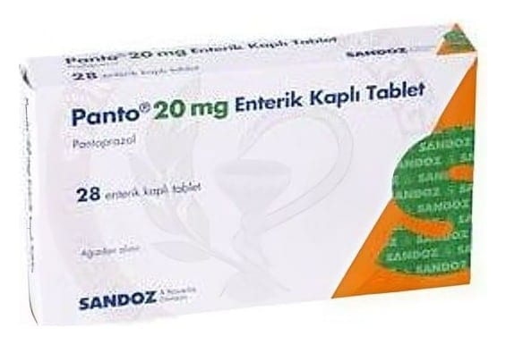

Panto 20 mg Enterik Kaplı Tablet, 28 Adet

Ne için kullanılır
KT · Bölüm 1• PANTO, ilaçların midede çözülmesini engelleyen özel bir madde ile kaplı (enterik kaplı) tabletler şeklinde kullanıma sunulmuştur. Her bir tabletin içinde etkin madde olarak 20 mg pantoprazol (pantoprazol sodyum seskihidrat olarak) bulunmaktadır. • PANTO’nun etkin maddesi olan pantoprazol, “proton pompası inhibitörü” olarak isimlendirilen bir ilaç grubuna dahildir. Etkisini midenizde üretilen asit miktarını azaltarak gösterir. Midenin ve bağırsakların asitle ilişkili rahatsızlıklarının tedavisinde kullanılır. • PANTO, sarı renkli, oval, enterik kaplı tabletlerdir. 28 enterik tablet içeren, alüminyum/alüminyum blister, karton kutu içinde piyasaya sunulmaktadır.
PANTO; 5 yaşın üzerindeki çocuklarda ve erişkinlerde: • Gastroözofageal reflü (yemeklerin ve asidin mideden yemek borusuna kaçması) birlikteliği ile oluşan erozif özofajitin (yemek borusunun yüzeyinde zamanla doku hasarı oluşumu) kısa süreli (en fazla 8 haftaya kadar) tedavisinde ve belirtilerinin iyileştirilmesinde,
• Reflü özofajitin (yemeklerin ve asidin mideden yemek borusuna kaçması sonucu yemek borusunun iltihabı) uzun süreli tedavisinde ve tekrarının önlenmesinde kullanılır.
Erişkinl erde: • Hafif derecede reflü hastalığı (yemeklerin ve asidin mideden yemek borusuna kaçması) ve hastalığa bağlı belirtilerin tedavisinde, • Sürekli nonsteroidal antienflamatuvar ilaç (NSAİİ, örneğin ibuprofen) tedavisi gören ve mide ve onikiparmak bağırsağı ülserleri olduğu endoskopik olarak kanıtlanan hastalarda kullanılır.